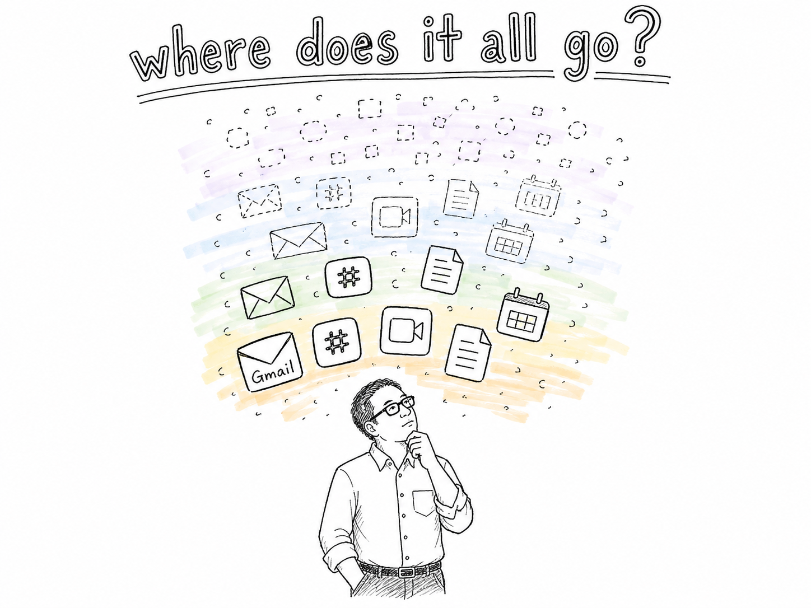
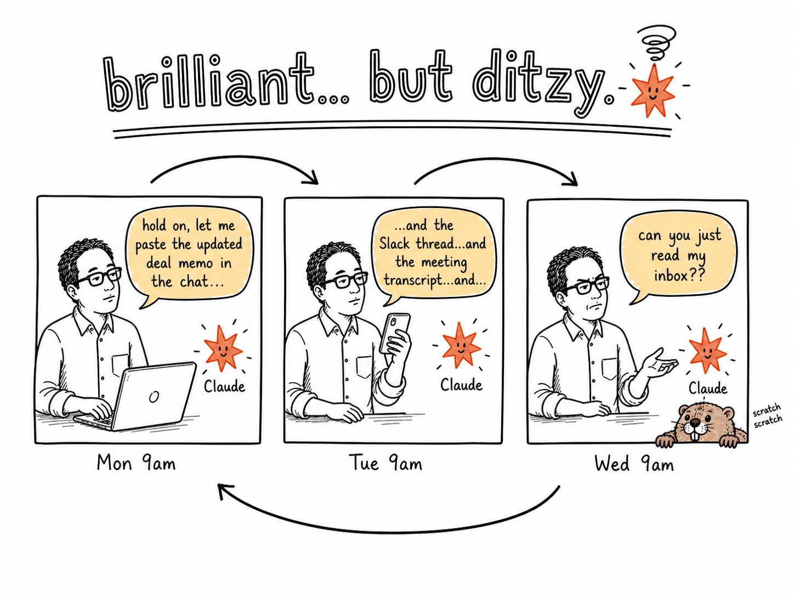
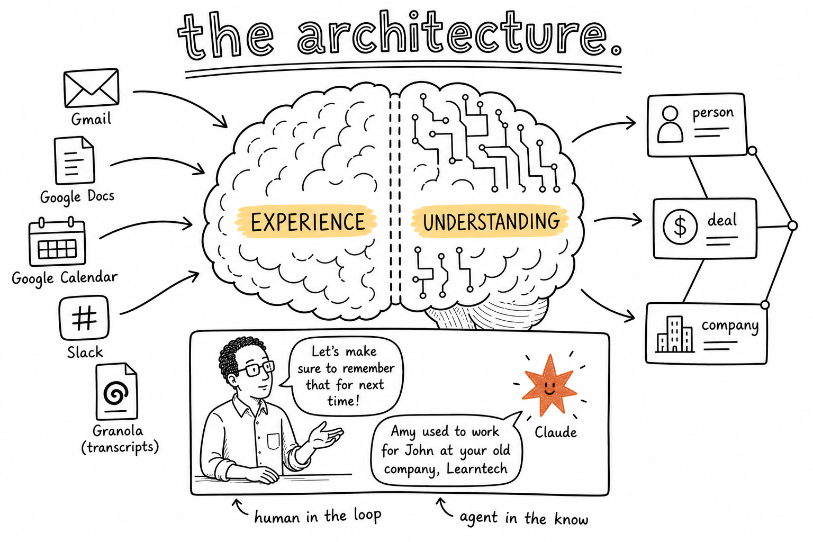
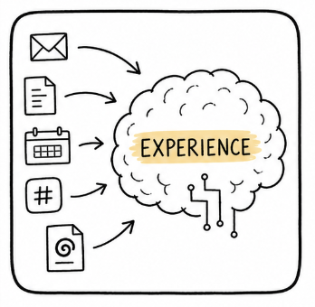
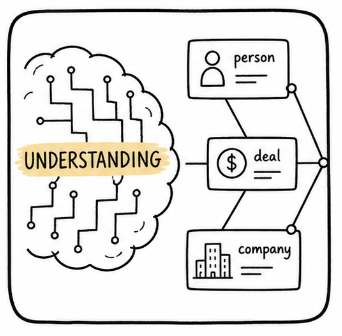
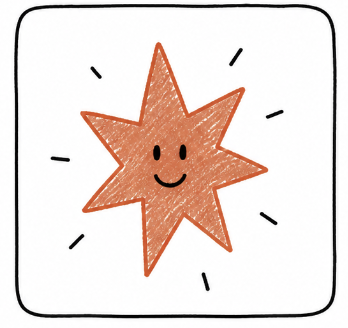
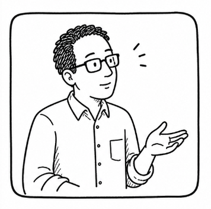
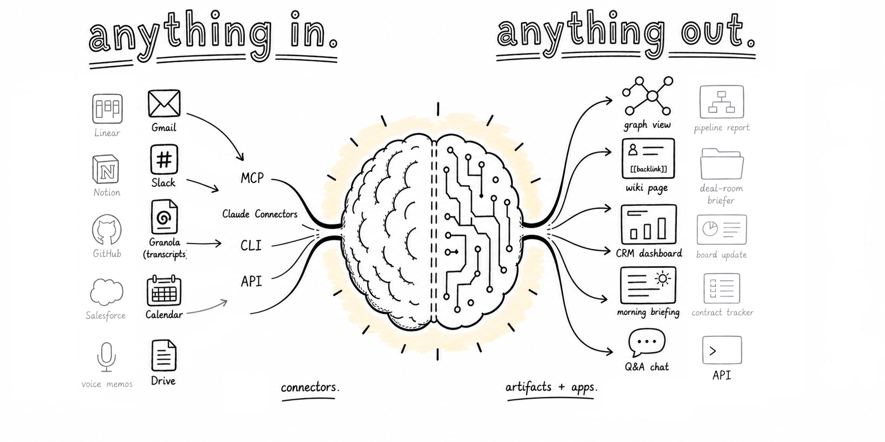
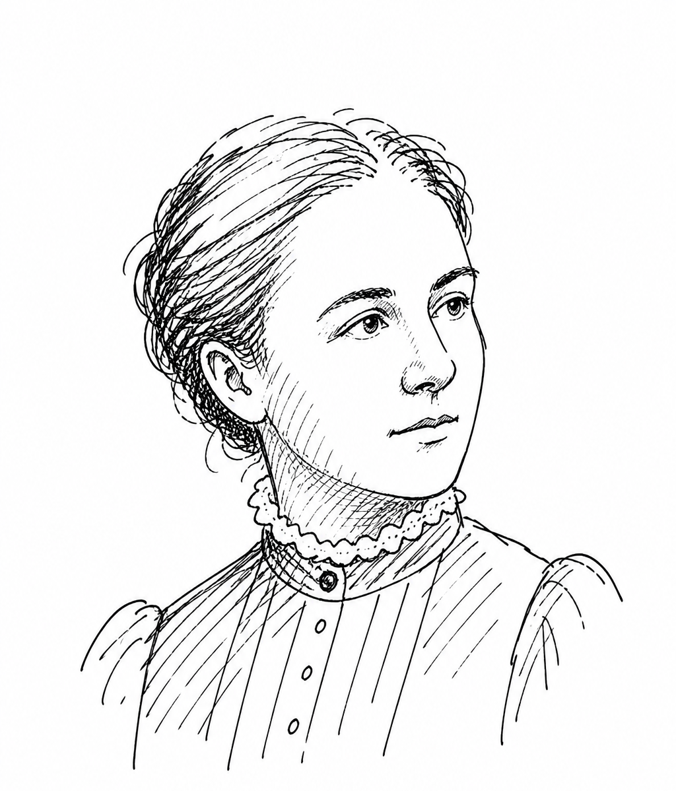

<!DOCTYPE html>
<html lang="en">
<head>
<meta charset="UTF-8" />
<meta name="viewport" content="width=device-width, initial-scale=1.0" />
<title>ALISS — Agentic memory for dynamic businesses</title>
<link rel="preconnect" href="https://fonts.googleapis.com" />
<link rel="preconnect" href="https://fonts.gstatic.com" crossorigin />
<link href="https://fonts.googleapis.com/css2?family=Source+Serif+4:ital,opsz,wght@0,8..60,300;0,8..60,400;0,8..60,500;0,8..60,600;0,8..60,700;1,8..60,400;1,8..60,500&family=Inter:wght@300;400;500;600;700&family=JetBrains+Mono:wght@400;500&display=swap" rel="stylesheet" />
<script src="https://unpkg.com/react@18.3.1/umd/react.development.js" integrity="sha384-hD6/rw4ppMLGNu3tX5cjIb+uRZ7UkRJ6BPkLpg4hAu/6onKUg4lLsHAs9EBPT82L" crossorigin="anonymous"></script>
<script src="https://unpkg.com/react-dom@18.3.1/umd/react-dom.development.js" integrity="sha384-u6aeetuaXnQ38mYT8rp6sbXaQe3NL9t+IBXmnYxwkUI2Hw4bsp2Wvmx4yRQF1uAm" crossorigin="anonymous"></script>
<script src="https://unpkg.com/@babel/standalone@7.29.0/babel.min.js" integrity="sha384-m08KidiNqLdpJqLq95G/LEi8Qvjl/xUYll3QILypMoQ65QorJ9Lvtp2RXYGBFj1y" crossorigin="anonymous"></script>
<style>
  :root {
    --paper: #ffffff;
    --paper-edge: #f3f0e8;
    --ink: #1a1a1a;
    --ink-soft: #3a3633;
    --ink-muted: #6b6258;
    --ink-faint: #a39782;
    --accent: #f0a830;
    --accent-wash: rgba(240, 168, 48, 0.32);
    --accent-deep: #c47a18;
    --rule: #d6cdb6;
    --grid-dot: rgba(60, 50, 30, 0.18);
    --grid-size: 22px;
    --serif: "Source Serif 4", "Iowan Old Style", Georgia, serif;
    --sans: "Inter", -apple-system, BlinkMacSystemFont, "Segoe UI", sans-serif;
    --mono: "JetBrains Mono", ui-monospace, Menlo, monospace;
  }

  * { box-sizing: border-box; }

  html, body {
    margin: 0;
    padding: 0;
    background: #2a2520;
    color: var(--ink);
    font-family: var(--sans);
    font-size: 17px;
    line-height: 1.55;
    -webkit-font-smoothing: antialiased;
    text-rendering: optimizeLegibility;
  }

  /* Page chrome — every "slide" is a notebook page */
  .page {
    max-width: 1080px;
    margin: 32px auto;
    background: var(--paper);
    background-image:
      radial-gradient(circle at 1px 1px, var(--grid-dot) 1px, transparent 1.4px);
    background-size: var(--grid-size) var(--grid-size);
    background-position: 22px 22px;
    box-shadow:
      0 1px 0 rgba(255,255,255,0.4) inset,
      0 30px 60px -20px rgba(0,0,0,0.55),
      0 8px 24px -8px rgba(0,0,0,0.35);
    border-radius: 2px;
    position: relative;
    overflow: hidden;
  }

  .page-inner {
    padding: 88px 96px 96px 96px;
    position: relative;
    z-index: 2;
  }

  /* Section number & label up top */
  .page-meta {
    display: flex;
    align-items: baseline;
    justify-content: space-between;
    margin-bottom: 36px;
    padding-bottom: 14px;
  }
  .page-num {
    font-family: var(--serif);
    font-size: 52px;
    line-height: 1;
    font-weight: 700;
    letter-spacing: -0.015em;
    color: var(--ink);
  }
  .page-tag {
    font-family: var(--sans);
    font-size: 11px;
    font-weight: 500;
    letter-spacing: 0.18em;
    text-transform: uppercase;
    color: var(--ink-muted);
  }

  /* Headlines */
  h1.eyebrow, .eyebrow {
    font-family: var(--sans);
    font-size: 11px;
    font-weight: 600;
    letter-spacing: 0.22em;
    text-transform: uppercase;
    color: var(--accent-deep);
    margin: 0 0 16px 0;
  }

  h1.headline {
    font-family: var(--serif);
    font-weight: 400;
    font-size: 52px;
    line-height: 1.08;
    letter-spacing: -0.015em;
    margin: 0 0 28px 0;
    color: var(--ink);
    max-width: 100%;
  }
  h1.headline em { font-style: italic; }

  h2.subhead {
    font-family: var(--serif);
    font-weight: 400;
    font-style: italic;
    font-size: 22px;
    line-height: 1.4;
    color: var(--ink-soft);
    margin: 0 0 32px 0;
    max-width: 720px;
    text-wrap: pretty;
  }

  p.body {
    font-family: var(--sans);
    font-size: 17px;
    line-height: 1.65;
    color: var(--ink-soft);
    margin: 0 0 18px 0;
    max-width: 100%;
    text-wrap: pretty;
  }

  p.body.lead {
    font-family: var(--serif);
    font-size: 21px;
    line-height: 1.55;
    color: var(--ink);
    max-width: 100%;
  }

  /* The accent — orange marker highlight */
  .hl {
    background: linear-gradient(180deg, transparent 12%, var(--accent-wash) 12%, var(--accent-wash) 88%, transparent 88%);
    padding: 0 2px;
    box-decoration-break: clone;
    -webkit-box-decoration-break: clone;
  }
  .hl-strong {
    background: var(--accent-wash);
    padding: 1px 6px;
    border-radius: 2px;
    font-weight: 500;
  }

  /* Inline ink elements */
  .ink-rule {
    height: 1px;
    background: var(--rule);
    margin: 36px 0;
    border: 0;
  }
  .ink-rule.short { width: 80px; background: var(--ink); height: 1.5px; }

  /* ============================ Tweaks panel positioning ============================ */
  #tweaks-root { position: fixed; bottom: 24px; right: 24px; z-index: 1000; }

  /* ============================ Hero / Slide 1 specific ============================ */
  .hero-mast {
    display: grid;
    grid-template-columns: 1fr;
    gap: 8px;
    margin-bottom: 24px;
  }
  .hero-mast .deck-title {
    font-family: var(--serif);
    font-weight: 600;
    font-size: 14px;
    letter-spacing: 0.06em;
    text-transform: uppercase;
    color: var(--ink);
  }
  .hero-mast .deck-sub {
    font-family: var(--serif);
    font-style: italic;
    font-size: 14px;
    color: var(--ink-muted);
  }

  /* ============================ Hand-drawn illustration frame ============================ */
  .illo {
    position: relative;
    margin: 28px 0 12px;
    padding: 14px;
  }
  .illo-inner {
    position: relative;
    z-index: 1;
  }
  .illo-inner img {
    display: block;
    width: 100%;
    height: auto;
  }
  .illo-pen {
    position: absolute;
    inset: 0;
    width: 100%;
    height: 100%;
    pointer-events: none;
    z-index: 2;
  }
  .illo-pen path {
    fill: none;
    stroke: var(--ink);
    stroke-width: 2;
    stroke-linecap: round;
    stroke-linejoin: round;
  }

  .prompt-box {
    background: rgba(255, 252, 240, 0.65);
    border-left: 3px solid var(--accent);
    padding: 16px 20px;
    margin-top: 18px;
    font-family: var(--mono);
    font-size: 12px;
    line-height: 1.6;
    color: var(--ink-soft);
    border-radius: 0 2px 2px 0;
  }
  .prompt-box .prompt-label {
    display: block;
    font-family: var(--sans);
    font-size: 10px;
    font-weight: 600;
    letter-spacing: 0.16em;
    text-transform: uppercase;
    color: var(--accent-deep);
    margin-bottom: 8px;
  }
  .prompt-box .prompt-copy-btn {
    float: right;
    background: transparent;
    border: 1px solid var(--ink-faint);
    color: var(--ink-muted);
    font-family: var(--sans);
    font-size: 10px;
    letter-spacing: 0.1em;
    text-transform: uppercase;
    padding: 3px 9px;
    cursor: pointer;
    border-radius: 2px;
    transition: all 0.15s ease;
  }
  .prompt-box .prompt-copy-btn:hover {
    border-color: var(--ink);
    color: var(--ink);
    background: rgba(255,255,255,0.5);
  }

  .placeholder-art {
    aspect-ratio: 16 / 9;
    background:
      repeating-linear-gradient(
        45deg,
        transparent,
        transparent 10px,
        rgba(60, 50, 30, 0.06) 10px,
        rgba(60, 50, 30, 0.06) 11px
      );
    border: 1px dashed var(--ink-faint);
    display: flex;
    align-items: center;
    justify-content: center;
    flex-direction: column;
    gap: 12px;
    color: var(--ink-muted);
    font-family: var(--serif);
    font-style: italic;
    font-size: 15px;
    text-align: center;
    padding: 32px;
  }
  .placeholder-art .ph-icon {
    font-family: var(--serif);
    font-size: 36px;
    color: var(--ink-faint);
  }

  /* ============================ Slide 3 — architecture components ============================ */
  .component {
    display: grid;
    grid-template-columns: 72px 1fr;
    gap: 16px;
    align-items: start;
  }
  .component-icon {
    width: 72px;
    height: 72px;
    object-fit: contain;
    margin-top: 2px;
    transform: rotate(-1.2deg);
  }
  .component:nth-child(2) .component-icon { transform: rotate(1deg); }
  .component:nth-child(3) .component-icon { transform: rotate(-0.6deg); }
  .component:nth-child(4) .component-icon { transform: rotate(1.4deg); }

  /* ============================ Slide 2 — four principles ============================ */
  .principles {
    display: grid;
    grid-template-columns: 1fr 1fr;
    gap: 32px 48px;
    margin-top: 12px;
  }
  .principle {
    display: grid;
    grid-template-columns: 56px 1fr;
    gap: 18px;
    align-items: start;
  }
  .principle-num {
    font-family: var(--serif);
    font-size: 32px;
    line-height: 1;
    font-weight: 500;
    color: var(--ink);
    position: relative;
    padding-top: 4px;
  }
  .principle-num::after {
    content: "";
    position: absolute;
    inset: -2px -4px -2px -4px;
    background: var(--accent-wash);
    z-index: -1;
    border-radius: 2px;
    transform: rotate(-1deg);
  }
  .principle-title {
    font-family: var(--serif);
    font-size: 19px;
    font-weight: 600;
    color: var(--ink);
    margin: 0 0 6px 0;
    line-height: 1.3;
  }
  .principle-body {
    font-family: var(--sans);
    font-size: 15px;
    line-height: 1.55;
    color: var(--ink-soft);
    margin: 0;
  }
  .principle-map {
    margin-top: 36px;
    padding: 20px 24px;
    border-top: 1px dashed var(--rule);
    border-bottom: 1px dashed var(--rule);
    background: rgba(255,252,240,0.4);
  }
  .principle-map-label {
    font-family: var(--sans);
    font-size: 11px;
    font-weight: 600;
    letter-spacing: 0.16em;
    text-transform: uppercase;
    color: var(--accent-deep);
    margin-bottom: 12px;
  }
  .principle-map ul {
    list-style: none;
    margin: 0; padding: 0;
    display: grid;
    grid-template-columns: 1fr 1fr;
    gap: 6px 24px;
  }
  .principle-map li {
    font-family: var(--serif);
    font-size: 14px;
    color: var(--ink-soft);
    font-style: italic;
  }
  .principle-map li b {
    font-family: var(--sans);
    font-style: normal;
    font-weight: 600;
    color: var(--ink);
    margin-right: 6px;
  }
  .principle-map .arrow {
    color: var(--accent-deep);
    margin: 0 4px;
  }

  /* ============================ Slide 1b — the gaps ============================ */
  .gaps {
    display: grid;
    grid-template-columns: 1fr 1fr 1fr;
    gap: 28px 32px;
    margin-top: 28px;
    padding-top: 24px;
    border-top: 1px solid var(--rule);
  }
  .gap {
    display: flex;
    flex-direction: column;
    gap: 8px;
  }
  .gap-label {
    font-family: var(--mono);
    font-size: 11px;
    text-transform: uppercase;
    letter-spacing: 0.18em;
    color: var(--ink-muted);
  }
  .gap-title {
    font-family: var(--serif);
    font-size: 19px;
    font-weight: 500;
    line-height: 1.25;
    color: var(--ink);
    margin: 0;
  }
  .gap-body {
    font-family: var(--sans);
    font-size: 14.5px;
    line-height: 1.55;
    color: var(--ink-muted);
    margin: 0;
  }

  /* ============================ Slide 5 — comparison ============================ */
  .compare-block { margin-top: 28px; }
  .compare-block + .compare-block {
    margin-top: 56px;
    padding-top: 48px;
    border-top: 1px solid var(--rule);
  }
  .compare-prompt {
    font-family: var(--serif);
    font-style: italic;
    font-size: 18px;
    color: var(--ink);
    padding: 14px 0 20px 0;
    margin: 0 0 24px 0;
    border-bottom: 1px solid var(--rule);
  }
  .compare-prompt::before {
    content: "Prompt — ";
    font-family: var(--sans);
    font-style: normal;
    font-size: 10px;
    font-weight: 600;
    letter-spacing: 0.16em;
    text-transform: uppercase;
    color: var(--accent-deep);
    margin-right: 8px;
    vertical-align: 2px;
  }
  .compare-grid {
    display: grid;
    grid-template-columns: 1fr 1fr;
    gap: 24px;
  }
  .compare-col {
    border: 1px solid var(--rule);
    background: rgba(255,252,240,0.45);
    padding: 22px 24px;
    border-radius: 2px;
    position: relative;
  }
  .compare-col.with {
    border-color: var(--ink);
    background: rgba(255,252,240,0.85);
    box-shadow: 0 2px 0 rgba(0,0,0,0.04);
  }
  .compare-label {
    font-family: var(--sans);
    font-size: 10px;
    font-weight: 600;
    letter-spacing: 0.18em;
    text-transform: uppercase;
    color: var(--ink-muted);
    margin-bottom: 14px;
    display: flex;
    align-items: center;
    gap: 8px;
  }
  .compare-label .dot {
    width: 7px; height: 7px;
    border-radius: 50%;
    background: var(--ink-faint);
  }
  .compare-col.with .compare-label { color: var(--accent-deep); }
  .compare-col.with .compare-label .dot { background: var(--accent); }
  .compare-col p {
    font-family: var(--sans);
    font-size: 14px;
    line-height: 1.6;
    color: var(--ink-soft);
    margin: 0 0 12px 0;
  }
  .compare-col.without p { color: var(--ink-muted); }
  .compare-col ol, .compare-col ul {
    font-family: var(--sans);
    font-size: 14px;
    line-height: 1.55;
    color: var(--ink-soft);
    padding-left: 22px;
    margin: 8px 0 14px 0;
  }
  .compare-col li { margin-bottom: 8px; }
  .compare-col li b { color: var(--ink); font-weight: 600; }
  .citation {
    margin-top: 14px;
    padding-top: 12px;
    border-top: 1px dashed var(--rule);
    font-family: var(--mono);
    font-size: 11px;
    color: var(--ink-muted);
    line-height: 1.5;
  }
  .citation::before {
    content: "Cited — ";
    font-family: var(--sans);
    font-size: 10px;
    font-weight: 600;
    letter-spacing: 0.14em;
    text-transform: uppercase;
    color: var(--accent-deep);
    margin-right: 4px;
  }

  /* ============================ Slide 6 — built on the brain (4 tiles) ============================ */
  .tiles {
    display: grid;
    grid-template-columns: 1fr 1fr;
    gap: 28px;
    margin-top: 12px;
  }
  .tile-frame {
    display: flex;
    flex-direction: column;
  }
  .tile-art {
    aspect-ratio: 4 / 3;
    border: 1.5px solid var(--ink);
    background: #fff;
    padding: 0;
    position: relative;
    overflow: hidden;
  }
  .tile-art::before, .tile-art::after {
    content: "";
    position: absolute;
    width: 12px; height: 12px;
    border: 1.5px solid var(--ink);
  }
  .tile-art::before { top: -6px; left: -6px; border-right: 0; border-bottom: 0; }
  .tile-art::after { bottom: -6px; right: -6px; border-left: 0; border-top: 0; }
  .tile-placeholder {
    width: 100%; height: 100%;
    display: flex;
    align-items: center;
    justify-content: center;
    flex-direction: column;
    gap: 10px;
    color: var(--ink-muted);
    font-family: var(--serif);
    font-style: italic;
    font-size: 13px;
    text-align: center;
    background:
      repeating-linear-gradient(
        45deg,
        transparent,
        transparent 8px,
        rgba(60, 50, 30, 0.05) 8px,
        rgba(60, 50, 30, 0.05) 9px
      );
    padding: 20px;
  }
  .tile-placeholder .ph-icon { font-size: 28px; color: var(--ink-faint); }
  .tile-caption {
    font-family: var(--serif);
    font-size: 14px;
    font-style: italic;
    color: var(--ink-soft);
    margin-top: 14px;
    line-height: 1.45;
  }
  .tile-caption b {
    font-family: var(--sans);
    font-style: normal;
    font-weight: 600;
    font-size: 13px;
    color: var(--ink);
    display: block;
    letter-spacing: 0.04em;
    text-transform: uppercase;
    margin-bottom: 4px;
  }
  .tile-closing {
    font-family: var(--serif);
    font-style: italic;
    font-size: 18px;
    color: var(--ink);
    text-align: center;
    margin-top: 48px;
    padding: 24px 0 0 0;
    border-top: 1px solid var(--rule);
    max-width: 640px;
    margin-left: auto;
    margin-right: auto;
  }

  /* ============================ Slide 6c — receipts (prompts + artifacts) ============================ */
  .receipts {
    display: grid;
    grid-template-columns: 1fr 1fr;
    grid-auto-rows: auto;
    gap: 48px 36px;
    margin-top: 28px;
  }
  .receipt {
    display: grid;
    grid-template-rows: subgrid;
    grid-row: span 3;
    gap: 12px;
  }
  .receipt-prompt {
    font-family: var(--serif);
    font-style: italic;
    font-size: 17px;
    line-height: 1.4;
    color: var(--ink);
    padding: 14px 16px;
    background: rgba(255, 252, 240, 0.65);
    border-left: 3px solid var(--accent);
  }
  .receipt-prompt::before {
    content: "Prompt — ";
    font-family: var(--sans);
    font-style: normal;
    font-size: 11px;
    font-weight: 700;
    letter-spacing: 0.16em;
    text-transform: uppercase;
    color: var(--accent-deep);
    margin-right: 8px;
    vertical-align: 2px;
  }
  .receipt-art {
    border: 1.5px solid var(--ink);
    background: #fff;
    position: relative;
    overflow: hidden;
    aspect-ratio: 16 / 10;
  }
  .receipt-art::before, .receipt-art::after {
    content: "";
    position: absolute;
    width: 12px; height: 12px;
    border: 1.5px solid var(--ink);
  }
  .receipt-art::before { top: -6px; left: -6px; border-right: 0; border-bottom: 0; }
  .receipt-art::after { bottom: -6px; right: -6px; border-left: 0; border-top: 0; }
  .receipt-art img { display: block; width: 100%; height: 100%; object-fit: cover; object-position: top left; }
  .receipt-art .tile-placeholder { aspect-ratio: auto; height: 100%; }
  .receipt-caption {
    font-family: var(--sans);
    font-size: 12px;
    text-transform: uppercase;
    letter-spacing: 0.18em;
    color: var(--ink-muted);
  }
  .receipt-caption b {
    font-weight: 700;
    color: var(--ink);
    margin-right: 8px;
  }

  /* ============================ Slide 9 — homage ============================ */
  .homage {
    display: grid;
    grid-template-columns: 340px 1fr;
    gap: 64px;
    align-items: start;
    margin-top: 12px;
  }
  .portrait-frame {
    border: 1.5px solid var(--ink);
    aspect-ratio: 1024 / 1198;
    position: relative;
    background: #fff;
    overflow: hidden;
  }
  .portrait-frame::before, .portrait-frame::after {
    content: "";
    position: absolute;
    width: 12px; height: 12px;
    border: 1.5px solid var(--ink);
  }
  .portrait-frame::before { top: -6px; left: -6px; border-right: 0; border-bottom: 0; }
  .portrait-frame::after { bottom: -6px; right: -6px; border-left: 0; border-top: 0; }
  .portrait-frame img { object-fit: cover; }
  .portrait-name {
    font-family: var(--serif);
    font-size: 28px;
    font-weight: 500;
    color: var(--ink);
    margin: 22px 0 4px 0;
    line-height: 1.15;
  }
  .portrait-name .hl-strong { font-weight: 500; }
  .portrait-years {
    font-family: var(--serif);
    font-style: italic;
    font-size: 16px;
    color: var(--ink-muted);
    margin: 0 0 18px 0;
  }
  .portrait-acronym {
    font-family: var(--mono);
    font-size: 11.5px;
    line-height: 1.5;
    text-transform: uppercase;
    letter-spacing: 0.08em;
    color: var(--ink-muted);
    padding: 12px 0;
    border-top: 1px solid var(--rule);
    border-bottom: 1px solid var(--rule);
    margin: 0 0 18px 0;
  }
  .portrait-acronym b {
    color: var(--ink);
    font-weight: 700;
  }
  .portrait-link {
    font-family: var(--sans);
    font-size: 13px;
    letter-spacing: 0.04em;
  }
  .portrait-link a {
    color: var(--accent-deep);
    text-decoration: none;
    border-bottom: 1px solid currentColor;
    padding-bottom: 1px;
    transition: color 0.15s ease;
  }
  .portrait-link a:hover {
    color: var(--ink);
  }
  .homage-story {
    display: flex;
    flex-direction: column;
    gap: 36px;
  }
  .homage-block-title {
    font-family: var(--serif);
    font-size: 22px;
    font-weight: 500;
    line-height: 1.2;
    color: var(--ink);
    margin: 0 0 10px 0;
  }
  .homage-block-body {
    font-family: var(--sans);
    font-size: 16.5px;
    line-height: 1.65;
    color: var(--ink-soft);
    margin: 0;
  }
  .homage-block-body em {
    font-family: var(--serif);
    font-style: italic;
    color: var(--ink);
  }

  /* ============================ Slide 4 — flow diagram ============================ */
  .flow-diagram {
    margin: 36px -16px 16px -16px;
    padding: 20px 0;
    background: rgba(255,252,240,0.35);
    border-top: 1px dashed var(--rule);
    border-bottom: 1px dashed var(--rule);
  }
  .flow-diagram svg {
    width: 100%;
    height: auto;
    display: block;
  }

  /* ============================ Footnote ============================ */
  .footnote {
    margin-top: 56px;
    padding-top: 18px;
    border-top: 1px solid var(--rule);
    font-family: var(--sans);
    font-size: 13px;
    line-height: 1.6;
    color: var(--ink-muted);
    text-wrap: pretty;
  }
  .footnote sup {
    font-family: var(--serif);
    font-style: italic;
    color: var(--accent-deep);
    font-size: 12px;
    margin-right: 6px;
  }
  .footnote a {
    color: var(--ink-soft);
    text-decoration: underline;
    text-decoration-color: var(--ink-faint);
    text-underline-offset: 2px;
  }
  .footnote a:hover { color: var(--accent-deep); text-decoration-color: var(--accent); }
  .footnote-ref {
    font-family: var(--serif);
    font-style: italic;
    font-size: 0.65em;
    color: var(--accent-deep);
    vertical-align: super;
    line-height: 0;
    margin-left: 2px;
    text-decoration: none;
  }

  /* Inline mono — file paths, code-ish strings */
  .mono {
    font-family: var(--mono);
    font-size: 0.88em;
    background: rgba(0, 0, 0, 0.04);
    padding: 1px 5px;
    border-radius: 3px;
    color: var(--ink-soft);
    white-space: nowrap;
  }

  /* ============================ Page transitions / index rail ============================ */
  .index-rail {
    position: fixed;
    top: 50%;
    left: 16px;
    transform: translateY(-50%);
    z-index: 100;
    display: flex;
    flex-direction: column;
    gap: 10px;
    padding: 12px 8px;
    background: rgba(20, 18, 14, 0.6);
    backdrop-filter: blur(8px);
    border-radius: 24px;
  }
  .index-rail a {
    width: 22px;
    height: 22px;
    border-radius: 50%;
    border: 1px solid rgba(255,255,255,0.25);
    color: rgba(255,255,255,0.65);
    font-family: var(--serif);
    font-size: 11px;
    display: flex;
    align-items: center;
    justify-content: center;
    text-decoration: none;
    transition: all 0.15s ease;
  }
  .index-rail a:hover { color: #fff; border-color: #fff; }
  .index-rail a.active { background: var(--accent); color: #1a1a1a; border-color: var(--accent); }

  /* Footer */
  .deck-footer {
    text-align: center;
    padding: 32px 0 60px 0;
    color: rgba(255,255,255,0.35);
    font-family: var(--serif);
    font-style: italic;
    font-size: 13px;
  }

  /* Responsive — collapse to single column where needed */
  @media (max-width: 880px) {
    .page-inner { padding: 56px 36px 64px 36px; }
    h1.headline { font-size: 38px; }
    .principles, .compare-grid, .tiles, .homage, .gaps {
      grid-template-columns: 1fr;
    }
    .principle-map ul { grid-template-columns: 1fr; }
    .index-rail { display: none; }
  }

  /* Print */
  @media print {
    body { background: #fff; }
    .page {
      box-shadow: none;
      margin: 0;
      page-break-after: always;
      max-width: 100%;
    }
    .index-rail, #tweaks-root, .deck-footer { display: none !important; }
  }
</style>
</head>
<body>
  <div id="root"></div>

  <script type="text/babel">


const { useState, useEffect, useRef } = React;

// ------------------ Tweak defaults ------------------
const TWEAK_DEFAULTS = /*EDITMODE-BEGIN*/{
  "accentHue": 265,
  "showDotGrid": true,
  "fontPair": "lora-ibm",
  "paperWarmth": 0
} /*EDITMODE-END*/;

// ------------------ Image-prompt blocks ------------------
const PROMPTS = {
  slide1: `A bullet journal page illustration in the style of a personal notebook. Black fineliner pen drawing on cream paper with a faint dot-grid pattern. At the bottom of the page, a hand-drawn human figure (gender-neutral, simple suit, casual character style) stands looking upward with one hand reaching up. Above them, hand-drawn icons of digital communication drift upward and progressively dissolve: an envelope (labeled "Gmail"), a hash mark in a square ("Slack"), a video-call rectangle ("Zoom"), a document with horizontal lines ("Google Docs"), a calendar grid event card ("Google Calendar"). The icons are drawn in confident solid black ink at the bottom and progressively become fainter, more sketch-like, and broken-up toward the top, as if dissolving. Translucent warm orange/yellow marker washes bleed behind the fading icons. A hand-lettered title at the top in a doubled-outline style reads "where does it all go?" Square or 4:3 aspect ratio.`,

  slide3: `A bullet journal page illustration. Black fineliner pen on cream paper with faint dot-grid pattern. A confidently hand-drawn human brain in profile occupies the center of the page, rendered with cross-hatching for shading. The brain is divided into two clearly separated hemispheres by a hand-drawn dotted line. The left hemisphere has hand-lettered text "EXPERIENCE" with a translucent warm orange/yellow marker highlight behind the word. The right hemisphere has hand-lettered text "UNDERSTANDING" with the same marker treatment. Hand-drawn arrows curve outward from each hemisphere. From EXPERIENCE — arrows point to small hand-drawn black-ink icons: an envelope ("Gmail"), a doc with lines ("Google Docs"), a calendar grid ("Google Calendar"), a hash mark ("Slack"), a transcript page ("Granola"). From UNDERSTANDING — arrows point to small hand-drawn entity cards labeled "person," "deal," "company," with thin lines connecting them like backlinks. At the front of the brain, a small hand-drawn glyph labeled "the agent" with orange marker highlight. Just outside the brain, a hand-drawn stick figure labeled "you" holds a speech bubble connecting to the agent; a hand-lettered note reads "human in the loop" with orange marker highlight. Hand-lettered title at the top in doubled-outline style: "the architecture." Wide aspect ratio.`,

  slide4: `A bullet journal infographic in the style of a personal hand-drawn notebook. Black fineliner pen on cream paper with a faint dot-grid pattern. A single warm orange/yellow translucent marker accent used sparingly throughout. The image depicts a 24-hour daily cycle of an AI-augmented business knowledge system, drawn as a large circular clock-face diagram occupying the center of the page.

CLOCK FACE CONVENTION — 24-hour dial, with NOON at the top and MIDNIGHT at the bottom. Hours advance clockwise. Hand-lettered hour markers placed around the circle in correct clockwise order: 12pm (noon) at top, 3pm at upper-right, 6pm at right, 9pm at lower-right, 12am (midnight) at bottom, 3am at lower-left, 6am at left, 9am at upper-left. The lower half of the dial (roughly 6pm clockwise through midnight to 6am) is faintly hatched or stippled to suggest "night / automation"; the upper half (6am clockwise through noon to 6pm) is left clean and bright to suggest "day / collaboration." Hand-lettered label "OVERNIGHT — automation" sits below the bottom of the clock; "DAYTIME — humans + Claude" sits above the top.

Four numbered stages are placed AROUND the clock at the appropriate hours, each rendered as a small hand-drawn vignette outside the dial and connected to its hour position by a curved arrow. They appear in clockwise time-order:

① At ~9am position (upper-left of dial): "Morning briefing." A small hand-drawn stick figure (the operator, glasses, button-up shirt, matching prior slides) sits at a desk with a laptop. Speech bubble: "morning briefing?" A small orange spark/star glyph (Claude) is reading from a folder labeled "raw/" via a thin connecting line. A document icon labeled "today's priorities" emerges. Tag: "Claude reads ingestion log + index + calendar + recent threads."

② At ~3pm position (upper-right of dial): "Ad-hoc ingestion." A small drawn calendar event tile labeled "meeting with Daniel," a hand-drawn arrow from it to a speech bubble where the operator says "ingest this," and a curving arrow into the raw/ folder. Tag: "verbatim, on the spot."

③ At ~6pm position (right side of dial): "Promotion to long-term memory." Hand-drawn dialogue between the operator and the Claude spark glyph. A wiki entity card (small rectangle with a person icon, hand-drawn text lines, and a [[backlink]]) is lifted by an arrow from the raw/ folder, with the operator saying "approved" and a small checkmark next to the card. The card lands in a separate folder labeled "wiki/" drawn similarly to raw/ but with cards instead of files. Below the wiki/ folder, a small note reads "every claim cites raw/" with a tiny arrow back to raw/. A second arrow leaves the wiki/ folder going to a small hand-drawn GitHub octocat-style logo: "commit immediately."

④ At ~9pm position (lower-right of dial, in the hatched night zone): "Nightly capture." A small drawn alarm-clock glyph, with hand-drawn arrows feeding from five tiny labelled app icons (envelope = Gmail, doc = Google Docs, calendar grid = Google Calendar, hash = Slack, transcript page = Granola) into the raw/ folder (a small open file folder with three rectangular markdown file glyphs inside, each labeled .md). A second arrow leaves the folder going to the GitHub logo, captioned "auto-commit." Tag: "9pm ET, weekdays — verbatim, append-only."

A bold orange marker arrow runs around the inside of the clock face, looping continuously clockwise — emphasizing that the cycle never breaks. Along the arc passing through the night zone (between stage ④ at 9pm and stage ① at 9am the next morning), a small hand-lettered annotation reads: "tomorrow's briefing starts smarter than today's."

In the very center of the clock face, a small hand-drawn GitHub logo with the word "DeweyLearn KG" hand-lettered beneath it — anchoring the whole cycle around the persistent repo as the source of truth.

A hand-lettered title at the top of the page in a doubled-outline style reads "how this works in practice." Below the cycle, a hand-lettered footer in italic reads: "automation captures source-of-truth · humans curate meaning."

Wide aspect ratio (16:10). Confident, warm, intentionally imperfect line work. Should feel like a working operator's notebook page where the daily rhythm of the system was figured out by living it.`,

  slide6a: `A bullet journal page illustration. Black fineliner pen drawing on cream paper with a faint dot-grid pattern. Translucent warm orange/yellow marker accents used sparingly throughout. Wide aspect ratio (16:9).

LAYOUT — left-to-right horizontal flow.

LEFT THIRD: a loose vertical column of about ten small hand-drawn app icons, each labeled in hand-lettering beneath the icon. The leftmost five icons are drawn in confident solid black ink: an envelope ("Gmail"), a hash mark in a square ("Slack"), a transcript page ("Granola"), a calendar grid ("Calendar"), a document with horizontal lines ("Drive"). To their right, a second cluster of icons drawn progressively fainter and sketchier — as if dissolving into the future: a kanban-board glyph ("Linear"), a writing-desk page ("Notion"), an octocat-style mark ("GitHub"), a cloud-database glyph ("Salesforce"), and a microphone ("voice memos"). The faintest icons toward the right of this cluster are barely-there pencil lines, with one or two unlabeled empty placeholders even further right to suggest "and whatever comes next." A small hand-lettered annotation below the column reads: "today + tomorrow."

CENTER: hand-drawn arrows curve and converge from each of the source icons toward the right side of the page, funneling together into a single thick channel. Along the converging arrows, hand-lettered tags label the connection types in a monospace-feeling hand: "MCP," "Claude Connectors," "CLI," "API." A small note in italic hand-lettering near the funnel reads: "agentic connectors."

RIGHT THIRD: a confidently hand-drawn human brain in profile, rendered with cross-hatching for shading, occupying the right side of the page. The thick funneled channel from the left enters the brain. A small translucent orange/yellow marker wash sits behind the brain. A hand-lettered label beneath the brain reads "the brain" with a doubled-outline accent.

TITLE: hand-lettered at the top of the page in a doubled-outline style: "anything in." Underneath, in smaller italic hand-lettering: "if it has an agentic connector, it can feed the brain."

Confident, warm, intentionally imperfect line work. Should feel like a working operator's notebook page where the extensibility of the system was being thought through.`,

  slide6b: `A bullet journal page illustration. Black fineliner pen drawing on cream paper with a faint dot-grid pattern. Translucent warm orange/yellow marker accents used sparingly throughout. Wide aspect ratio (16:9). This image is the MIRROR of a companion illustration ("anything in") — it must depict the same hand-drawn brain in profile but reading right-to-left flow OUT of the brain, with composition flipped horizontally compared to the companion.

LAYOUT — left-to-right horizontal flow, brain on the LEFT, artifacts on the RIGHT.

LEFT THIRD: a confidently hand-drawn human brain in profile, rendered with cross-hatching for shading, occupying the left side of the page. A small translucent orange/yellow marker wash sits behind the brain. A hand-lettered label beneath the brain reads "the brain" with a doubled-outline accent. (This is the same brain depicted in the companion "anything in" illustration; it should feel like the same character.)

CENTER: hand-drawn arrows fan outward from the brain toward the right side of the page, splitting from a single thick channel into multiple curving paths, each ending at a different artifact. Along the diverging arrows, hand-lettered tags label the surface types in a monospace-feeling hand: "graph view," "wiki page," "dashboard," "briefing," "chat," "API." A small note in italic hand-lettering near the splitting funnel reads: "ask the brain anything."

RIGHT THIRD: a loose vertical column of about six small hand-drawn artifact vignettes, each labeled in hand-lettering beneath. The leftmost (most prominent, drawn in confident solid black ink) artifacts are:
— a small node-and-edge graph diagram (circles connected by lines, like a knowledge graph) labeled "graph view"
— a wiki entity card (a small rectangle with a person icon, hand-drawn text lines, and a tiny [[backlink]] label) labeled "wiki page"
— a dashboard mock (a small rectangle with three bar-chart bars and a header line) labeled "CRM dashboard"
— a document with horizontal lines and a sun glyph labeled "morning briefing"

To the right of these, a second cluster of artifacts drawn progressively fainter and sketchier — as if dissolving into the future:
— a chat-bubble glyph labeled "Q&A chat"
— a deal-room folder labeled "deal-room briefer"
— a board-deck slide glyph (faintest) labeled "board update"
— and one or two unlabeled empty placeholders even further right to suggest "whatever's needed next week."

A small hand-lettered annotation below the column reads: "today + tomorrow."

TITLE: hand-lettered at the top of the page in a doubled-outline style: "anything out." Underneath, in smaller italic hand-lettering: "every artifact is a different question asked of the brain."

Confident, warm, intentionally imperfect line work. Should feel like a working operator's notebook page, paired visually and stylistically with the "anything in" page so that placed side-by-side they read as two halves of a single picture.`,

  slide7: `A bullet journal page illustration. Black fineliner pen on cream paper with faint dot-grid pattern. A hand-drawn portrait of Alice Chipman Dewey, the late 19th-century American educator. Three-quarter view, head and shoulders. Late Victorian dress: high-necked blouse with a small lace collar. Hair pulled back simply. Composed, intelligent, dignified expression — gazing slightly off-camera. Drawn in confident black ink line work with cross-hatching for shading, in the careful hand of someone sketching a portrait in their personal notebook. Beneath the portrait, hand-lettered: "Alice Chipman Dewey" with a translucent warm orange/yellow marker highlight underneath the name, and "1859–1899" in italic hand-lettering. Vertical/portrait aspect ratio.`
};

// Hand-drawn pen-style frame — SVG path with subtle wobble overlaying any image
function PenFrame({ children, padding = 14 }) {
  return (
    <div className="illo" style={{ padding }}>
          <div className="illo-inner">{children}</div>
          <svg className="illo-pen" viewBox="0 0 1000 700" preserveAspectRatio="none" aria-hidden="true">
            {/* Outer hand-drawn rectangle — slightly imperfect */}
            <path d="M 12 9
                     C 200 6, 420 11, 640 7
                     S 870 12, 988 10
                     C 992 180, 989 360, 991 520
                     S 990 670, 988 690
                     C 800 692, 580 688, 360 691
                     S 130 689, 12 692
                     C 9 540, 11 380, 8 220
                     S 11 90, 12 9 Z" />


        


        


        


        


        
            {/* Second pen pass — slightly offset, fainter — gives the doubled-line journal feel */}
            <path d="M 18 16
                     C 220 14, 440 18, 660 14
                     S 880 18, 982 17
                     C 985 200, 983 380, 985 530
                     S 984 660, 982 684
                     C 800 686, 580 682, 360 685
                     S 130 683, 18 685
                     C 16 540, 17 380, 14 220
                     S 17 90, 18 16 Z"


        style={{ opacity: 0.55, strokeWidth: 1.2 }} />
          </svg>
        </div>);

}

function PromptBox({ promptKey, label = "Image prompt — paste into Nano Banana / NotebookLM / Midjourney" }) {
  const [copied, setCopied] = useState(false);
  const text = PROMPTS[promptKey];
  const onCopy = async () => {
    try {
      await navigator.clipboard.writeText(text);
      setCopied(true);
      setTimeout(() => setCopied(false), 1500);
    } catch (e) {}
  };
  return (
    <div className="prompt-box">
          <button className="prompt-copy-btn" onClick={onCopy}>
            {copied ? "Copied" : "Copy"}
          </button>
          <span className="prompt-label">{label}</span>
          {text}
        </div>);

}

function PlaceholderArt({ label, ratio = "16 / 9", icon = "✎" }) {
  return (
    <div className="placeholder-art" style={{ aspectRatio: ratio }}>
          <div className="ph-icon">{icon}</div>
          <div>{label}</div>
          <div style={{ fontSize: 12, fontStyle: "normal", color: "var(--ink-faint)" }}>
            Drop the generated image here
          </div>
        </div>);

}

function IllustrationSlot({ promptKey, frameLabel, caption, ratio = "16 / 9", icon = "✎" }) {
  return (
    <div className="frame">
          <span className="frame-label">{frameLabel}</span>
          <PlaceholderArt label="Illustration placeholder" ratio={ratio} icon={icon} />
          <div className="frame-caption">{caption}</div>
          <PromptBox promptKey={promptKey} />
        </div>);

}

// ------------------ Slides ------------------

function Slide1() {
  return (
    <section className="page" id="slide-1" data-screen-label="01 What we realized">
          <div className="page-inner">
            <div style={{ display: "flex", justifyContent: "flex-end", marginBottom: 24 }}>
              <span className="page-tag" style={{ fontSize: "13px", fontWeight: 700, color: "var(--ink)", letterSpacing: "0.22em" }}>THE PROBLEM</span>
            </div>
            <h1 className="headline">
              My critical business knowledge is largely <em><span className="hl">ephemeral</span></em>.
            </h1>

            <p className="body lead">
              The most consequential things at DeweyLearn — what was said in a sales call, what
              we agreed on in a roadmap meeting, what we’ve committed to a partner — live in
              ephemeral exchanges. Zoom, Slack, email, document edits.
            </p>
            <p className="body">They dissipate almost as fast as they’re created. ALISS started as my attempt to address this.


        </p>

            <PenFrame>
              
          
            </PenFrame>
          </div>
        </section>);

}

function Slide2() {
  return (
    <section className="page" id="slide-2" data-screen-label="02 The problem (cont.)">
      <div className="page-inner">
        <div style={{ display: "flex", justifyContent: "flex-end", marginBottom: 24 }}>
          <span className="page-tag" style={{ fontSize: "13px", fontWeight: 700, color: "var(--ink)", letterSpacing: "0.22em" }}>THE PROBLEM</span>
        </div>
        <h1 className="headline">
          Agentic systems like Claude have <em><span className="hl">some</span></em> memory — but not the kind a business runs on.
        </h1>

        <p className="body lead">
          Claude can remember a chat, or a doc you paste in. What it can’t do is hold a cumulative,
          structured picture of your business — one that ingests from where work actually happens,
          that you can see and steer, and that gets sharper every week.
        </p>

        <div className="gaps">
          <div className="gap">
            <div className="gap-label">Gap 01 — Surface</div>
            <h3 className="gap-title">Memory is shallow.</h3>
            <p className="gap-body">
              Scoped to chat history and explicit uploads. There’s no model of the people, deals,
              and decisions that make up the business — just a pile of past conversations.
            </p>
          </div>
          <div className="gap">
            <div className="gap-label">Gap 02 — Ingestion</div>
            <h3 className="gap-title">No reliable pipe to where work happens.</h3>
            <p className="gap-body">
              Gmail, Slack, calendar, Granola, Drive — none of it flows in unless you stop and paste
              it. The signal sits in channels Claude can’t reach on its own.
            </p>
          </div>
          <div className="gap">
            <div className="gap-label">Gap 03 — Control</div>
            <h3 className="gap-title">The operator can’t see or steer it.</h3>
            <p className="gap-body">
              No view of what’s remembered, no way to edit or watch it update. Knowledge created
              in one thread doesn’t carry into the next, let alone become a shared artifact.
            </p>
          </div>
        </div>

        <p className="body" style={{ marginTop: 32 }}>
          Without a memory the operator owns and the system maintains, every session is Groundhog Day —
          the same setup, the same context-loading, the same starting from scratch.
        </p>

        <PenFrame>
          
          
        </PenFrame>
      </div>
    </section>);

}

function Slide3() {
  const principles = [
  {
    n: "I",
    title: "Capture without loss.",
    body: "Continuous, automatic, verbatim. If preservation depends on someone remembering to write it up, it’s already failed."
  },
  {
    n: "II",
    title: "Synthesis you can trust.",
    body: "Raw exchanges distilled into people, deals, and decisions — with every claim traceable back to the source it came from."
  },
  {
    n: "III",
    title: "An active mind, not a search bar.",
    body: "Something has to do the synthesizing — and bring that synthesis into every new conversation. Storage isn’t memory."
  },
  {
    n: "IV",
    title: "A human in the loop.",
    body: "The agent proposes; the operator approves, edits, or pushes back. Trust comes from judgment being applied, not assumed. The system works with you, never autonomously for you."
  }];

  return (
    <section className="page" id="slide-3" data-screen-label="03 What's needed">
          <div className="page-inner">
            <div style={{ display: "flex", justifyContent: "flex-end", marginBottom: 24 }}>
              <span className="page-tag" style={{ fontSize: "13px", fontWeight: 700, color: "var(--ink)", letterSpacing: "0.22em" }}>WHAT&rsquo;S NEEDED</span>
            </div>

            <h1 className="headline">
              How can <span className="hl">Claude + an agentic memory system</span> help?
            </h1>
            <h2 className="subhead">
              Four things agentic systems can do that prior generations of tools — wikis, second-brain
              apps, CRMs — could not.
            </h2>

            <div className="principles">
              {principles.map((p) =>
          <div key={p.n} className="principle">
                  <div className="principle-num">{p.n}.</div>
                  <div>
                    <h3 className="principle-title">{p.title}</h3>
                    <p className="principle-body">{p.body}</p>
                  </div>
                </div>
          )}
            </div>

            <div className="principle-map">
              <div className="principle-map-label">↳ The four map directly to the architecture on the next page</div>
              <ul>
                <li><b>I</b><span className="arrow">→</span> Experience</li>
                <li><b>II</b><span className="arrow">→</span> Understanding</li>
                <li><b>III</b><span className="arrow">→</span> The agent</li>
                <li><b>IV</b><span className="arrow">→</span> The operator, in dialogue</li>
              </ul>
            </div>

            <div className="footnote">
              <sup>†</sup>
              <a href="https://x.com/karpathy/status/2039805659525644595" target="_blank" rel="noopener noreferrer">In his viral X post from April 2026</a>, Andrej Karpathy discussed this same problem and created the playbook for using agents + memory to solve it. But his Obsidian-based solution is focused on knowledge gathered through web research, rather than typical business use case models. And it relies on emergent, proprietary systems for the memory storage (Obsidian), which makes it less trustworthy and portable.
            </div>
          </div>
        </section>);

}

function Slide4() {
  return (
    <section className="page" id="slide-4" data-screen-label="04 Architecture">
          <div className="page-inner">
            <div style={{ display: "flex", justifyContent: "flex-end", marginBottom: 24 }}>
              <span className="page-tag" style={{ fontSize: "13px", fontWeight: 700, color: "var(--ink)", letterSpacing: "0.22em" }}>THE ARCHITECTURE</span>
            </div>

            <h1 className="headline">
              Two memory layers, one <em>active mind</em> — with me in the loop.
            </h1>
            <h2 className="subhead">
              Here&rsquo;s how the brain metaphor maps to what&rsquo;s actually running.
            </h2>

            <PenFrame>
              
          
            </PenFrame>
        

            <div className="principles" style={{ marginTop: 36 }}>
              <div className="component">
                
                <div>
                  <h3 className="principle-title">
                    <span className="hl-strong">Experience</span>
                    <span style={{ fontFamily: "var(--mono)", fontSize: 12, fontWeight: 400, color: "var(--ink-muted)", marginLeft: 10 }}>
                      raw/ — markdown
                    </span>
                  </h3>
                  <p className="principle-body">The verbatim record of what happened. Every meeting, email, doc, calendar event exactly as it occurred — scheduled or requested ingestion, stored as markdown in a Github repo.</p>
                </div>
              </div>
              <div className="component">
                
                <div>
                  <h3 className="principle-title">
                    <span className="hl-strong">Understanding</span>
                    <span style={{ fontFamily: "var(--mono)", fontSize: 12, fontWeight: 400, color: "var(--ink-muted)", marginLeft: 10 }}>
                      wiki/ — backlinked
                    </span>
                  </h3>
                  <p className="principle-body">
                    Synthesized knowledge. Curated entity pages connected through backlinks. Every claim
                    cites a source in Experience.
                  </p>
                </div>
              </div>
              <div className="component">
                
                <div>
                  <h3 className="principle-title">
                    <span className="hl-strong">The agent</span>
                    <span style={{ fontFamily: "var(--mono)", fontSize: 12, fontWeight: 400, color: "var(--ink-muted)", marginLeft: 10 }}>
                      Claude · file-system access
                    </span>
                  </h3>
                  <p className="principle-body">
                    The active mind. Reads when asked, proposes when synthesizing, bridges the two
                    halves. The thing that makes this a brain rather than a wiki.
                  </p>
                </div>
              </div>
              <div className="component">
                
                <div>
                  <h3 className="principle-title">
                    <span className="hl-strong">Human in the loop</span>
                    <span style={{ fontFamily: "var(--mono)", fontSize: 12, fontWeight: 400, color: "var(--ink-muted)", marginLeft: 10 }}>
                      conversation
                    </span>
                  </h3>
                  <p className="principle-body">
                    Approves, edits, pushes back. The judgment that makes synthesis trustworthy.
                  </p>
                </div>
              </div>
            </div>
          </div>
        </section>);

}

function Slide5() {
  return (
    <section className="page" id="slide-5" data-screen-label="05 How this works in practice">
          <div className="page-inner">
            <div style={{ display: "flex", justifyContent: "flex-end", marginBottom: 24 }}>
              <span className="page-tag" style={{ fontSize: "13px", fontWeight: 700, color: "var(--ink)", letterSpacing: "0.22em" }}>HOW THIS WORKS IN PRACTICE</span>
            </div>

            <h1 className="headline">
              How this <em><span className="hl">works in practice</span></em>.
            </h1>
            <h2 className="subhead">
              One continuous 24-hour cycle. <span className="hl-strong">Automation captures source-of-truth; humans curate meaning.</span>
            </h2>

            <PenFrame>
              
            </PenFrame>

            <div className="principles" style={{ marginTop: 36 }}>
              <div className="component">
                <div className="principle-num">1.</div>
                <div>
                  <h3 className="principle-title">
                    <span className="hl-strong">Overnight, automation captures.</span>
                  </h3>
                  <p className="principle-body">
                    A scheduled task runs at 9pm ET. Granola transcripts, Gmail threads, calendar events,
                    and Drive document deltas land in <span className="mono">raw/</span> as time-stamped markdown
                    files — verbatim, append-only, never edited. The whole repository auto-commits
                    to GitHub with an <span className="mono">[auto-ingest]</span> tag.
                  </p>
                </div>
              </div>
              <div className="component">
                <div className="principle-num">2.</div>
                <div>
                  <h3 className="principle-title">
                    <span className="hl-strong">In the morning, the day begins in dialogue.</span>
                  </h3>
                  <p className="principle-body">
                    I open Claude Desktop and ask for a morning briefing. Claude reads the ingestion log,
                    the entity index, today&rsquo;s calendar, and recent threads — then synthesizes priorities.
                    The system isn&rsquo;t generic any more; it knows what just happened.
                  </p>
                </div>
              </div>
              <div className="component">
                <div className="principle-num">3.</div>
                <div>
                  <h3 className="principle-title">
                    <span className="hl-strong">Through the day, fresh signal flows in.</span>
                  </h3>
                  <p className="principle-body">
                    After meaningful meetings or threads, I ask Claude to ingest them on the spot. Claude
                    writes verbatim to <span className="mono">raw/</span>, then proposes wiki updates — a person&rsquo;s
                    role changed, a deal advanced, a decision was made. I approve, edit, or push back.
                  </p>
                </div>
              </div>
              <div className="component">
                <div className="principle-num">4.</div>
                <div>
                  <h3 className="principle-title">
                    <span className="hl-strong">Approved synthesis lands in long-term memory.</span>
                  </h3>
                  <p className="principle-body">
                    Claude commits the wiki edit to GitHub immediately, with every claim carrying a citation
                    back to its raw source. No routine ever writes to <span className="mono">wiki/</span> directly — that&rsquo;s
                    the discipline that keeps the synthesis trustworthy. Tomorrow&rsquo;s briefing starts smarter than today&rsquo;s.
                  </p>
                </div>
              </div>
            </div>
          </div>
        </section>);

}

function FlowDiagram() {
  // Hand-drawn-feeling SVG flow: 5 stages + feedback arc
  // Stages: Channels → Capture (raw/) → Claude in context → Conversation → Promotion to Understanding
  // Feedback arc loops from Understanding back to Claude
  return (
    <div className="flow-diagram">
          <svg viewBox="0 0 1080 380" xmlns="http://www.w3.org/2000/svg" role="img" aria-label="Flow diagram of how memory forms">
            <defs>
              <marker id="arr" viewBox="0 0 10 10" refX="9" refY="5" markerWidth="9" markerHeight="9" orient="auto-start-reverse">
                <path d="M 0 0 L 10 5 L 0 10 z" fill="#1a1a1a" />
              </marker>
              <marker id="arrAccent" viewBox="0 0 10 10" refX="9" refY="5" markerWidth="10" markerHeight="10" orient="auto-start-reverse">
                <path d="M 0 0 L 10 5 L 0 10 z" fill="var(--accent-deep)" />
              </marker>
              <filter id="rough" x="-2%" y="-2%" width="104%" height="104%">
                <feTurbulence type="fractalNoise" baseFrequency="0.02" numOctaves="2" seed="3" />
                <feDisplacementMap in="SourceGraphic" scale="1.4" />
              </filter>
            </defs>

            {/* Stage 1 — Channels */}
            <g transform="translate(40, 70)" filter="url(#rough)">
              <rect x="0" y="0" width="160" height="220" rx="3" fill="none" stroke="#1a1a1a" strokeWidth="1.5" />
              <text x="80" y="-10" textAnchor="middle" fontFamily="Source Serif 4, serif" fontSize="13" fontStyle="italic" fill="#6b6258">① channels</text>
              {/* icons */}
              <g fontFamily="Inter, sans-serif" fontSize="11" fill="#1a1a1a">
                <g transform="translate(20, 22)">
                  <rect width="22" height="16" fill="none" stroke="#1a1a1a" strokeWidth="1.2" />
                  <path d="M0 0 L11 9 L22 0" fill="none" stroke="#1a1a1a" strokeWidth="1.2" />
                  <text x="32" y="12">Gmail</text>
                </g>
                <g transform="translate(20, 56)">
                  <rect width="20" height="20" fill="none" stroke="#1a1a1a" strokeWidth="1.2" />
                  <text x="6" y="15" fontWeight="700" fontSize="13">#</text>
                  <text x="32" y="14">Slack</text>
                </g>
                <g transform="translate(20, 92)">
                  <rect width="22" height="16" fill="none" stroke="#1a1a1a" strokeWidth="1.2" />
                  <line x1="3" y1="5" x2="14" y2="5" stroke="#1a1a1a" strokeWidth="1" />
                  <line x1="3" y1="9" x2="18" y2="9" stroke="#1a1a1a" strokeWidth="1" />
                  <line x1="3" y1="13" x2="12" y2="13" stroke="#1a1a1a" strokeWidth="1" />
                  <text x="32" y="12">Google Docs</text>
                </g>
                <g transform="translate(20, 128)">
                  <rect width="22" height="18" fill="none" stroke="#1a1a1a" strokeWidth="1.2" />
                  <line x1="0" y1="6" x2="22" y2="6" stroke="#1a1a1a" strokeWidth="1.2" />
                  <line x1="11" y1="0" x2="11" y2="18" stroke="#1a1a1a" strokeWidth="0.8" />
                  <text x="32" y="12">Calendar</text>
                </g>
                <g transform="translate(20, 166)">
                  <rect width="18" height="22" fill="none" stroke="#1a1a1a" strokeWidth="1.2" />
                  <line x1="3" y1="6" x2="15" y2="6" stroke="#1a1a1a" strokeWidth="0.8" />
                  <line x1="3" y1="10" x2="15" y2="10" stroke="#1a1a1a" strokeWidth="0.8" />
                  <line x1="3" y1="14" x2="11" y2="14" stroke="#1a1a1a" strokeWidth="0.8" />
                  <text x="28" y="14">Granola</text>
                </g>
              </g>
              <text x="80" y="240" textAnchor="middle" fontFamily="Source Serif 4, serif" fontSize="11" fontStyle="italic" fill="#6b6258">the day&rsquo;s exchanges</text>
            </g>

            {/* Arrow 1 → 2 */}
            <path d="M 205 180 C 230 180, 240 180, 270 180" fill="none" stroke="#1a1a1a" strokeWidth="1.5" markerEnd="url(#arr)" filter="url(#rough)" />

            {/* Stage 2 — Capture (raw/) */}
            <g transform="translate(275, 130)" filter="url(#rough)">
              <text x="55" y="-8" textAnchor="middle" fontFamily="Source Serif 4, serif" fontSize="13" fontStyle="italic" fill="#6b6258">② capture</text>
              {/* file stack */}
              <rect x="20" y="20" width="80" height="60" fill="#fff" stroke="#1a1a1a" strokeWidth="1.5" />
              <rect x="14" y="14" width="80" height="60" fill="#fff" stroke="#1a1a1a" strokeWidth="1.5" />
              <rect x="8" y="8" width="80" height="60" fill="#fff" stroke="#1a1a1a" strokeWidth="1.5" />
              <text x="48" y="40" fontFamily="JetBrains Mono, monospace" fontSize="10" fill="#1a1a1a">raw/</text>
              <text x="48" y="54" fontFamily="JetBrains Mono, monospace" fontSize="9" fill="#6b6258">*.md</text>
              <text x="55" y="100" textAnchor="middle" fontFamily="Source Serif 4, serif" fontSize="11" fontStyle="italic" fill="#6b6258">daily, automatic, verbatim</text>
            </g>

            {/* Arrow 2 → 3 */}
            <path d="M 385 160 C 420 160, 430 160, 460 160" fill="none" stroke="#1a1a1a" strokeWidth="1.5" markerEnd="url(#arr)" filter="url(#rough)" />

            {/* Stage 3 — Claude in context */}
            <g transform="translate(460, 110)" filter="url(#rough)">
              <text x="60" y="-8" textAnchor="middle" fontFamily="Source Serif 4, serif" fontSize="13" fontStyle="italic" fill="#6b6258">③ Claude, in context</text>
              {/* spark */}
              <g transform="translate(40, 20)">
                <path d="M 30 0 L 36 24 L 60 30 L 36 36 L 30 60 L 24 36 L 0 30 L 24 24 Z"
            fill="none" stroke="#1a1a1a" strokeWidth="1.5" />
                <text x="30" y="34" textAnchor="middle" fontFamily="Source Serif 4, serif" fontSize="11" fontWeight="600" fill="#1a1a1a">C</text>
              </g>
              <text x="60" y="100" textAnchor="middle" fontFamily="Source Serif 4, serif" fontSize="11" fontStyle="italic" fill="#6b6258">no longer generic —</text>
              <text x="60" y="114" textAnchor="middle" fontFamily="Source Serif 4, serif" fontSize="11" fontStyle="italic" fill="#6b6258">knows what just happened</text>
            </g>

            {/* Arrow 3 → 4 */}
            <path d="M 590 160 C 625 160, 635 160, 660 160" fill="none" stroke="#1a1a1a" strokeWidth="1.5" markerEnd="url(#arr)" filter="url(#rough)" />

            {/* Stage 4 — Conversation */}
            <g transform="translate(660, 110)" filter="url(#rough)">
              <text x="65" y="-8" textAnchor="middle" fontFamily="Source Serif 4, serif" fontSize="13" fontStyle="italic" fill="#6b6258">④ conversation</text>
              {/* Two figures with bubbles */}
              <circle cx="25" cy="32" r="7" fill="none" stroke="#1a1a1a" strokeWidth="1.3" />
              <path d="M 18 40 L 18 60 M 32 40 L 32 60 M 18 50 L 32 50" fill="none" stroke="#1a1a1a" strokeWidth="1.3" />
              {/* speech bubble accent */}
              <rect x="42" y="20" width="48" height="22" rx="3" fill="rgba(240,168,48,0.32)" stroke="#1a1a1a" strokeWidth="1.2" />
              <path d="M 50 42 L 46 50 L 56 42" fill="rgba(240,168,48,0.32)" stroke="#1a1a1a" strokeWidth="1.2" />
              <rect x="42" y="48" width="48" height="22" rx="3" fill="#fff" stroke="#1a1a1a" strokeWidth="1.2" />
              <path d="M 78 70 L 82 78 L 72 70" fill="#fff" stroke="#1a1a1a" strokeWidth="1.2" />
              <circle cx="105" cy="32" r="7" fill="none" stroke="#1a1a1a" strokeWidth="1.3" />
              <path d="M 98 40 L 98 60 M 112 40 L 112 60 M 98 50 L 112 50" fill="none" stroke="#1a1a1a" strokeWidth="1.3" />
              <text x="65" y="105" textAnchor="middle" fontFamily="Source Serif 4, serif" fontSize="11" fontStyle="italic" fill="#6b6258">we work through what</text>
              <text x="65" y="118" textAnchor="middle" fontFamily="Source Serif 4, serif" fontSize="11" fontStyle="italic" fill="#6b6258">matters together</text>
            </g>

            {/* Arrow 4 → 5 */}
            <path d="M 800 160 C 830 160, 840 160, 870 160" fill="none" stroke="#1a1a1a" strokeWidth="1.5" markerEnd="url(#arr)" filter="url(#rough)" />

            {/* Stage 5 — Promotion to Understanding */}
            <g transform="translate(870, 110)" filter="url(#rough)">
              <text x="80" y="-8" textAnchor="middle" fontFamily="Source Serif 4, serif" fontSize="13" fontStyle="italic" fill="#6b6258">⑤ understanding</text>
              {/* entity card */}
              <rect x="20" y="10" width="100" height="80" fill="#fff" stroke="#1a1a1a" strokeWidth="1.5" />
              <line x1="20" y1="28" x2="120" y2="28" stroke="#1a1a1a" strokeWidth="1" />
              <text x="26" y="24" fontFamily="JetBrains Mono, monospace" fontSize="9" fill="#1a1a1a">person/daniel-r</text>
              <line x1="26" y1="38" x2="100" y2="38" stroke="#a39782" strokeWidth="0.6" />
              <line x1="26" y1="46" x2="110" y2="46" stroke="#a39782" strokeWidth="0.6" />
              <line x1="26" y1="54" x2="92" y2="54" stroke="#a39782" strokeWidth="0.6" />
              <text x="26" y="70" fontFamily="JetBrains Mono, monospace" fontSize="8" fill="#c47a18">[[sterling-group]]</text>
              <text x="26" y="82" fontFamily="JetBrains Mono, monospace" fontSize="8" fill="#c47a18">[[series-a]]</text>
              {/* small linked cards */}
              <rect x="125" y="20" width="32" height="20" fill="#fff" stroke="#1a1a1a" strokeWidth="1" />
              <rect x="125" y="60" width="32" height="20" fill="#fff" stroke="#1a1a1a" strokeWidth="1" />
              <line x1="120" y1="40" x2="125" y2="30" stroke="#a39782" strokeWidth="0.8" />
              <line x1="120" y1="60" x2="125" y2="70" stroke="#a39782" strokeWidth="0.8" />
              <text x="80" y="110" textAnchor="middle" fontFamily="Source Serif 4, serif" fontSize="11" fontStyle="italic" fill="#6b6258">worth-remembering lands</text>
              <text x="80" y="123" textAnchor="middle" fontFamily="Source Serif 4, serif" fontSize="11" fontStyle="italic" fill="#6b6258">in long-term memory</text>
            </g>

            {/* ⑥ Feedback arc — accent — from Understanding back to Claude */}
            <path d="M 970 100 C 970 30, 520 20, 520 95"
        fill="none" stroke="var(--accent-deep)" strokeWidth="2.5" markerEnd="url(#arrAccent)"
        filter="url(#rough)" />
            <rect x="640" y="6" width="240" height="22" rx="3" fill="rgba(240,168,48,0.32)" stroke="none" />
            <text x="760" y="22" textAnchor="middle" fontFamily="Source Serif 4, serif" fontSize="13" fontStyle="italic" fill="#1a1a1a">
              ⑥ understanding accrues — every conversation starts smarter
            </text>
          </svg>
        </div>);

}

function Slide6() {
  return (
    <section className="page" id="slide-6" data-screen-label="06 What becomes possible">
          <div className="page-inner">
            <div style={{ display: "flex", justifyContent: "flex-end", marginBottom: 24 }}>
              <span className="page-tag" style={{ fontSize: "13px", fontWeight: 700, color: "var(--ink)", letterSpacing: "0.22em" }}>WHAT BECOMES POSSIBLE</span>
            </div>

            <h1 className="headline">
              The same conversations, <em>with</em> and <em>without</em> ALISS.
            </h1>
            <h2 className="subhead">
              Memory is the difference between a generic assistant and a partner who knows your business.
            </h2>

            <div className="compare-block">
              <div className="compare-prompt">
                Catch me up on Sterling before I follow up with Daniel.
              </div>
              <div className="compare-grid">
                <div className="compare-col without">
                  <div className="compare-label"><span className="dot"></span>Without ALISS</div>
                  <p>
                    Sterling Group is a family-office venture arm with investments across biotech,
                    technology, and education. Founded by the Sterling family, the firm is known
                    for long-term, founder-friendly capital and deep diligence cycles. Without
                    more context on the meeting, I can offer general background on their
                    investment style.
                  </p>
                </div>
                <div className="compare-col with">
                  <div className="compare-label"><span className="dot"></span>With ALISS</div>
                  <p>
                    30-min Daniel Reed Zoom yesterday. <b>Three concrete openings landed:</b>
                  </p>
                  <ol>
                    <li><b>Series A direct</b> — Sterling promoted to Tier-1 syndicate target. Robert Sterling personally invited you to an in-person visit later this month.</li>
                    <li><b>Prism Learning partnership wedge</b> — Sterling-incubated; flagship physics pilot at a top research university. Most concrete near-term commercial angle.</li>
                    <li><b>Vertex Diagnostics tech-team adjacency</b> — Sterling digital-health portfolio, clinical relevance.</li>
                  </ol>
                  <p>
                    <b>Connect to:</b> Daniel Worth thread (Friday) — his Stein-backed
                    AI-university venture and the Sterling Series A interest are two halves of a
                    frontier-AI story Ravi has been pushing on. Worth weaving into your follow-up.
                  </p>
                  <p>
                    <b>Suggested next:</b> Lead the in-person prep with Prism Learning (concrete
                    wedge); let Series A live as warm context, not the ask.
                  </p>
                  <div className="citation">
                    raw/granola/2026-05-01-daniel-reed-sterling.md · wiki/people/daniel-worth.md
                  </div>
                </div>
              </div>
            </div>

            <div className="compare-block">
              <div className="compare-prompt">
                Where does the Series A syndicate stand this week?
              </div>
              <div className="compare-grid">
                <div className="compare-col without">
                  <div className="compare-label"><span className="dot"></span>Without ALISS</div>
                  <p>
                    A typical $4–5M Series A syndicate has a lead at $2–4M plus 3–5 co-investors
                    at $250–750K each. Common education-impact funds you might consider: Forge,
                    Apex, Continuum, Mercer, Pinetree. Want me to research specific firms?
                  </p>
                </div>
                <div className="compare-col with">
                  <div className="compare-label"><span className="dot"></span>With ALISS</div>
                  <p>
                    <b>Lead locked:</b> Forge Ventures, $25M pre, $4M anchor. Jane sent latest
                    Google Doc in Slack this morning. 4 redline asks pending; signature slipped from Friday →
                    early next week.
                  </p>
                  <p style={{ marginTop: 8 }}><b>Confirmed syndicate:</b></p>
                  <ul>
                    <li>Apex Ventures (Raj Patel — Gmail thread Tuesday) — $500–750K, June close</li>
                    <li>Continuum Capital (Ann Pierce — your former Trilogy colleague / Greg Martens) — $500K–$1M</li>
                  </ul>
                  <p><b>Re-engaged this week:</b></p>
                  <ul>
                    <li>Mercer Educational Fund — back in at $500K interest (Ravi Slack DM Friday, after earlier-month stall)</li>
                  </ul>
                  <p><b>New soft candidates surfaced this week:</b></p>
                  <ul>
                    <li><b>PFI</b> — Jim Sutton Zoom meeting yesterday (Granola transcript); Pennington Foundation&rsquo;s first-ever investment vehicle</li>
                    <li><b>Sterling</b> — Daniel Reed Zoom yesterday, promoted to Tier-1 (see above)</li>
                  </ul>
                  <p><b>Existing seed pro-rata likely:</b> Pinetree (Liam Marsh socialized to full team in Friday all-hands), Cypress, Ridgeline.</p>
                  <p><b>Cold/closed:</b> Latitude (too late-stage), Workforce Ventures (passed via email), Horizon ambiguous.</p>
                  <div className="citation">
                    wiki/deals/series-a-fundraise.md · 12 raw sources (Slack, Gmail, Granola, Google Docs) from the past week
                  </div>
                </div>
              </div>
            </div>
          </div>
        </section>);

}

function Slide7() {
  return (
    <section className="page" id="slide-7" data-screen-label="07 Anything in, anything out">
      <div className="page-inner">
        <div style={{ display: "flex", justifyContent: "flex-end", marginBottom: 24 }}>
          <span className="page-tag" style={{ fontSize: "13px", fontWeight: 700, color: "var(--ink)", letterSpacing: "0.22em" }}>EXTENSIBLE BY CONSTRUCTION</span>
        </div>

        <h1 className="headline">
          Anything in. <em><span className="hl">Anything out.</span></em>
        </h1>
        <h2 className="subhead">
          The brain doesn&rsquo;t care where work happens — only that it can read what happened.
          And once it knows, every surface the team needs is just a different question asked of it.
        </h2>

        <PenFrame>
          
        </PenFrame>

        <div className="principles" style={{ marginTop: 32, gridTemplateColumns: "1fr 1fr" }}>
          <div className="component" style={{ gridTemplateColumns: "44px 1fr" }}>
            <div className="principle-num">i.</div>
            <div>
              <h3 className="principle-title">
                <span className="hl-strong">No tool left behind.</span>
              </h3>
              <p className="principle-body">
                The team keeps the apps that already work for them. The brain meets the work where
                it lives — Gmail, Slack, Linear, Notion, voice memos, whatever&rsquo;s next — instead
                of asking anyone to migrate.
              </p>
            </div>
          </div>
          <div className="component" style={{ gridTemplateColumns: "44px 1fr" }}>
            <div className="principle-num">ii.</div>
            <div>
              <h3 className="principle-title">
                <span className="hl-strong">One memory, many surfaces.</span>
              </h3>
              <p className="principle-body">
                The same brain renders as a graph, a wiki, a dashboard, a briefing, a chat — whichever
                lens fits the question. No double-entry, no separate sources of truth.
              </p>
            </div>
          </div>
          <div className="component" style={{ gridTemplateColumns: "44px 1fr" }}>
            <div className="principle-num">iii.</div>
            <div>
              <h3 className="principle-title">
                <span className="hl-strong">Open by construction.</span>
              </h3>
              <p className="principle-body">
                Connectors are protocols, not partnerships. Any system that exposes one — including
                internal tools we haven&rsquo;t written yet — becomes a tributary or a surface, no
                vendor permission required.
              </p>
            </div>
          </div>
          <div className="component" style={{ gridTemplateColumns: "44px 1fr" }}>
            <div className="principle-num">iv.</div>
            <div>
              <h3 className="principle-title">
                <span className="hl-strong">Citation all the way down.</span>
              </h3>
              <p className="principle-body">
                Every artifact the brain produces traces back to raw sources. Outputs are auditable,
                not generated from nothing — the same discipline that makes the wiki trustworthy makes
                every surface trustworthy.
              </p>
            </div>
          </div>
        </div>
      </div>
    </section>);

}

function Slide8() {
  const receipts = [
    {
      prompt: "Give me an up-to-date briefing on Northbridge Impact Capital for my meeting in an hour.",
      label: "Pre-meeting briefing",
      file: "briefings/northbridge-impact-capital-2026-05-06.docx",
      img: "images/slide8-briefing.png"
    },
    {
      prompt: "Show me your most current knowledge of everything DeweyLearn as an interactive knowledge graph.",
      label: "Knowledge graph",
      file: "viz/graph.html?focus=deweylearn",
      img: "images/slide8-knowledge-graph.png"
    },
    {
      prompt: "Build an interactive wiki view of your current DeweyLearn knowledge.",
      label: "Wiki entity page",
      file: "wiki/companies/deweylearn.md",
      img: "images/slide8-wiki.png"
    },
    {
      prompt: "I need a sales pipeline report I can share with the team.",
      label: "Pipeline report",
      file: "apps/pipeline/2026-05-02.html",
      img: "images/slide8-pipeline.png"
    }
  ];

  return (
    <section className="page" id="slide-8" data-screen-label="08 Receipts">
      <div className="page-inner">
        <div style={{ display: "flex", justifyContent: "flex-end", marginBottom: 24 }}>
          <span className="page-tag" style={{ fontSize: "13px", fontWeight: 700, color: "var(--ink)", letterSpacing: "0.22em" }}>BUILT ON THE BRAIN — IN ACTION</span>
        </div>

        <h1 className="headline">
          Four prompts. <em><span className="hl">Four surfaces.</span></em>
        </h1>
        <h2 className="subhead">
          One brain underneath. Each artifact below is the brain answering a different question — generated, not hand-built. The recurring patterns are encoded as reusable <em>skills</em> — write the prompt once, get the artifact reliably each time. Citations all the way down.
        </h2>

        <div className="receipts">
          {receipts.map((r) => (
            <div key={r.label} className="receipt">
              <div className="receipt-prompt">{r.prompt}</div>
              <div className="receipt-art">
                
              </div>
              <div className="receipt-caption">
                <b>{r.label}</b>{r.file}
              </div>
            </div>
          ))}
        </div>
      </div>
    </section>
  );
}

function Slide9() {
  return (
    <section className="page" id="slide-9" data-screen-label="09 Why ALISS">
      <div className="page-inner">
        <div style={{ display: "flex", justifyContent: "flex-end", marginBottom: 24 }}>
          <span className="page-tag" style={{ fontSize: "13px", fontWeight: 700, color: "var(--ink)", letterSpacing: "0.22em" }}>WHY ALISS</span>
        </div>

        <h1 className="headline">
          Why <em><span className="hl">ALISS</span></em>.
        </h1>

        <div className="homage">
          <div>
            <div className="portrait-frame">
              
            </div>
            <div className="portrait-name">
              <span className="hl-strong">Alice Chipman Dewey</span>
            </div>
            <div className="portrait-years">1858 – 1927</div>
            <div className="portrait-acronym">
              <span style={{ letterSpacing: "0.04em" }}><b>A</b>gentic <b>L</b>ongitudinal <b>I</b>ntelligent <b>S</b>torage <b>S</b>ystem</span>
            </div>
            <div className="portrait-link">
              <a href="https://en.wikipedia.org/wiki/Alice_Chipman_Dewey" target="_blank" rel="noopener noreferrer">
                Wikipedia <span aria-hidden="true">↗</span>
              </a>
            </div>
          </div>
          <div className="homage-story">
            <div className="homage-block">
              <h3 className="homage-block-title">Why we named it for her.</h3>
              <p className="homage-block-body">
                Alice Chipman Dewey was an early pioneer of progressive education — running
                classrooms as living experiments in how children learn, decades before the field
                caught up to her. Less remembered than her partner John, she was as much an
                architect of that vision as he was. <em>ALISS</em> is named for her — and, by
                extension, for both Deweys&rsquo; insistence that learning should be re-thought
                from first principles.
              </p>
            </div>
            <div className="homage-block">
              <h3 className="homage-block-title">Why we built it ourselves.</h3>
              <p className="homage-block-body">
                DeweyLearn isn&rsquo;t just building products with AI — we&rsquo;re trying to
                build the company itself in an AI-native way. <em>ALISS</em> is the working
                memory that makes that possible: not a tool we use, but a system we live inside.
                The Deweys treated learning as something to be re-invented from first principles.
                We&rsquo;re trying to do the same with how a company knows itself.
              </p>
            </div>
          </div>
        </div>
      </div>
    </section>);

}

// ------------------ Index rail (jump links) ------------------
function IndexRail() {
  const [active, setActive] = useState("1");
  const [ids, setIds] = useState([]);
  useEffect(() => {
    const slides = Array.from(document.querySelectorAll("section.page"));
    setIds(slides.map((s) => s.id.replace("slide-", "")));
    const handler = () => {
      let current = slides[0]?.id?.replace("slide-", "") || "1";
      slides.forEach((s) => {
        const r = s.getBoundingClientRect();
        if (r.top < window.innerHeight / 2) current = s.id.replace("slide-", "");
      });
      setActive(current);
    };
    handler();
    window.addEventListener("scroll", handler, { passive: true });
    return () => window.removeEventListener("scroll", handler);
  }, []);
  return (
    <nav className="index-rail" aria-label="Slide index">
          {ids.map((i) =>
      <a key={i} href={`#slide-${i}`} className={active === i ? "active" : ""} title={`Slide ${i}`}>
              {i}
            </a>
      )}
        </nav>);

}

// ------------------ Tweaks ------------------
function applyTweaks(t) {
  const root = document.documentElement;
  // Accent hue — derive accent + wash + deep from a single hue
  const h = t.accentHue;
  root.style.setProperty("--accent", `hsl(${h}, 86%, 56%)`);
  root.style.setProperty("--accent-wash", `hsla(${h}, 86%, 56%, 0.32)`);
  root.style.setProperty("--accent-deep", `hsl(${h}, 76%, 36%)`);

  // Dot grid
  root.style.setProperty("--grid-dot", t.showDotGrid ? "rgba(60, 50, 30, 0.18)" : "transparent");

  // Font pairing
  const pairs = {
    "source-inter": { serif: '"Source Serif 4", Georgia, serif', sans: '"Inter", -apple-system, sans-serif' },
    "playfair-inter": { serif: '"Playfair Display", Georgia, serif', sans: '"Inter", sans-serif' },
    "lora-ibm": { serif: '"Lora", Georgia, serif', sans: '"IBM Plex Sans", sans-serif' },
    "fraunces-work": { serif: '"Fraunces", Georgia, serif', sans: '"Work Sans", sans-serif' }
  };
  const pair = pairs[t.fontPair] || pairs["source-inter"];
  root.style.setProperty("--serif", pair.serif);
  root.style.setProperty("--sans", pair.sans);

  // Inject extra font when needed
  const id = "tweak-fonts-extra";
  let link = document.getElementById(id);
  const families = {
    "playfair-inter": "Playfair+Display:ital,wght@0,400;0,500;0,600;1,400&family=Inter:wght@300;400;500;600",
    "lora-ibm": "Lora:ital,wght@0,400;0,500;0,600;1,400&family=IBM+Plex+Sans:wght@300;400;500;600",
    "fraunces-work": "Fraunces:ital,opsz,wght@0,9..144,400;0,9..144,500;0,9..144,600;1,9..144,400&family=Work+Sans:wght@300;400;500;600"
  };
  if (families[t.fontPair]) {
    if (!link) {
      link = document.createElement("link");
      link.id = id;link.rel = "stylesheet";
      document.head.appendChild(link);
    }
    link.href = `https://fonts.googleapis.com/css2?family=${families[t.fontPair]}&display=swap`;
  }

  // Paper warmth — 0 = pure white, 1 = full cream
  const w = t.paperWarmth;
  const r = Math.round(255 - w * 8);
  const g = Math.round(255 - w * 14);
  const b = Math.round(255 - w * 28);
  root.style.setProperty("--paper", `rgb(${r}, ${g}, ${b})`);
}

function TweaksPanelMount() {
  // useTweaks comes from tweaks-panel.jsx
  const [tweaks, setTweak] = window.useTweaks(TWEAK_DEFAULTS);
  useEffect(() => {applyTweaks(tweaks);}, [tweaks]);
  const T = window;
  return (
    <T.TweaksPanel title="Tweaks">
          <T.TweakSection title="Accent">
            <T.TweakSlider
          label="Accent hue"
          value={tweaks.accentHue}
          min={0} max={360} step={1}
          onChange={(v) => setTweak("accentHue", v)}
          suffix="°" />
        
          </T.TweakSection>
          <T.TweakSection title="Paper">
            <T.TweakToggle
          label="Show dot grid"
          value={tweaks.showDotGrid}
          onChange={(v) => setTweak("showDotGrid", v)} />
        
            <T.TweakSlider
          label="Paper warmth"
          value={tweaks.paperWarmth}
          min={0} max={1} step={0.05}
          onChange={(v) => setTweak("paperWarmth", v)} />
        
          </T.TweakSection>
          <T.TweakSection title="Type">
            <T.TweakSelect
          label="Font pairing"
          value={tweaks.fontPair}
          onChange={(v) => setTweak("fontPair", v)}
          options={[
          { value: "source-inter", label: "Source Serif 4 + Inter" },
          { value: "playfair-inter", label: "Playfair Display + Inter" },
          { value: "lora-ibm", label: "Lora + IBM Plex Sans" },
          { value: "fraunces-work", label: "Fraunces + Work Sans" }]
          } />
        
          </T.TweakSection>
        </T.TweaksPanel>);

}

// ------------------ App ------------------
function App() {
  // Apply defaults on first load so accent etc. take effect
  useEffect(() => {applyTweaks(TWEAK_DEFAULTS);}, []);
  return (
    <>
          <IndexRail />
          <Slide1 />
          <Slide2 />
          <Slide3 />
          <Slide4 />
          <Slide5 />
          <Slide6 />
          <Slide7 />
          <Slide8 />
          <Slide9 />
          <div className="deck-footer">ALISS — Agentic Longitudinal Intelligent Storage System · DeweyLearn · 2026</div>
        </>);

}

ReactDOM.createRoot(document.getElementById("root")).render(<App />);
</script>
</body>
</html>
